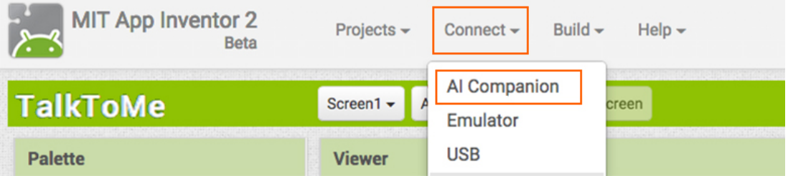

In this codelab, you'll learn how to make your first app!
What you'll learn
- Use the Designer View to create the user interface.
- Use the Blocks View to add functionality to the app.
- Use the Button and TextToSpeech components.
- Use Event Handlers.
Go to appinventor.mit.edu and click the orange Create Apps button.
Log in with your Google account. Click Continue when the App Inventor announcements pop up.
From the Projects drop down menu, click Start a new project.
Create a new project called
TalkToMe (no spaces).
There are two main views that you will use to build your app: Designer View and Blocks View.
- Designer View is where you add components to your app and create what your app looks like. You used this view to add the Button component.
- Blocks View is where you program what each component does.
For this step, make sure you are looking at the Designer View.
In the Palette section, under the User Interface drawer, drag a Button component onto the viewer.
Next, in the Media drawer, drag a TextToSpeech component onto the viewer.
Notice, it appears in the Non-visible components section under the viewer.
Challenges
- Change the text of the Button to say "Talk To Me".
Hint: Use the Properties section of the Button component.
At the top of the App Inventor website, find Connect, and select AI Companion from the drop down menu.
Open the AI2 Companion App on your phone.
Select scan QR code and use your phone to scan the code that appears on your computer. Click connect with code.

As a reminder, there are two main views used to build your apps: Designer View and Blocks View.
- Designer View is where you add components to your app and create what your app looks like. You used this view to add the Button component.
- Blocks View is where you program what each component does.
Click on Blocks.
Challenges
- In Blocks View, open the Button drawer and drag the
when Button1.Clickblock into the workspace. - Open the TextToSpeech drawer and place the
call TextToSpeech1.Speakblock into thewhen Button1.ClickEvent Handler. - Next, open the Text drawer and drag a text block into the
messagesocket. Click the Text block and type "Congratulations! You've made your first app."
There are many ways in which users can interact with your app. These actions are often called events.
Event Handlers allow us to run code in response to specific events. For example, the when Button.Click block
is an Event Handler that causes something to happen every time a user clicks the button.
You have made your first app using App Inventor.
What we've covered
- Use the Designer View to create the user interface.
- Use the Blocks View to add functionality to the app.
- Use the Button and TextToSpeech components.
- Use Event Handlers.